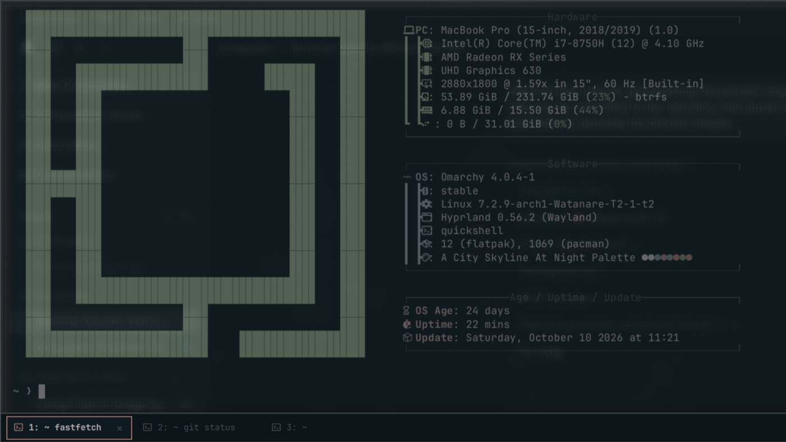
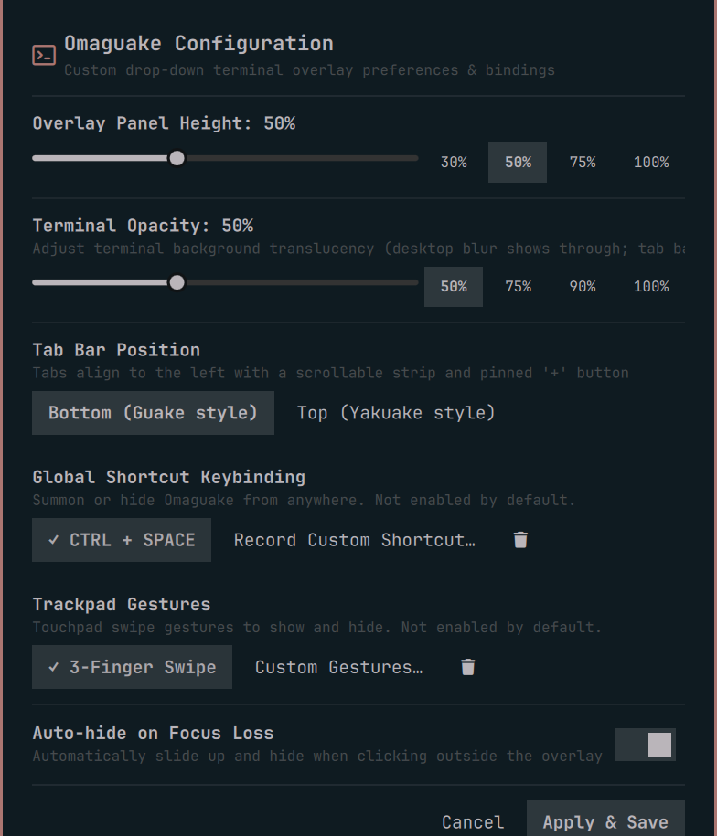

Omarchy Plugin
v{{VERSION}}
Omaguake
Quake-style drop-down terminal for Omarchy, powered by native QMLTermWidget emulation.
Global Shortcut Keybinding
CTRL + SPACE
Instant drop-down toggle from anywhere. One-click suggested binding or record any custom shortcut with live conflict detection.
Touchpad Gestures
3 & 4 Fingers
Natural Mac-style trackpad navigation. Swipe down to summon the terminal and swipe up to smoothly slide it away.
Hide on Focus Loss
Auto-Dismiss
Clicking outside the overlay or refocusing other windows immediately and gracefully hides the terminal.
Multi-Tab Terminal Sessions
Guake & Yakuake
Tabs display current directory and last executed command. Easily position tab bar at the bottom or top.
Independent Terminal Opacity
Solid Tab Bar
Adjust terminal background translucency and desktop blur while keeping the tab bar, tabs, and navigation controls 100% solid.
Omaguake Drop-down Overlay (~ ❯)

Configuration Panel
Right-click Bar Widget
